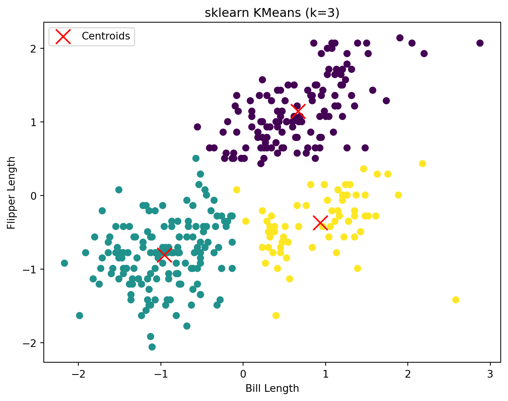
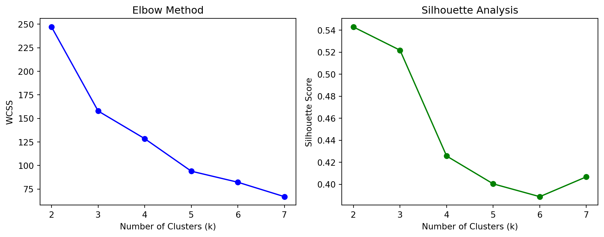
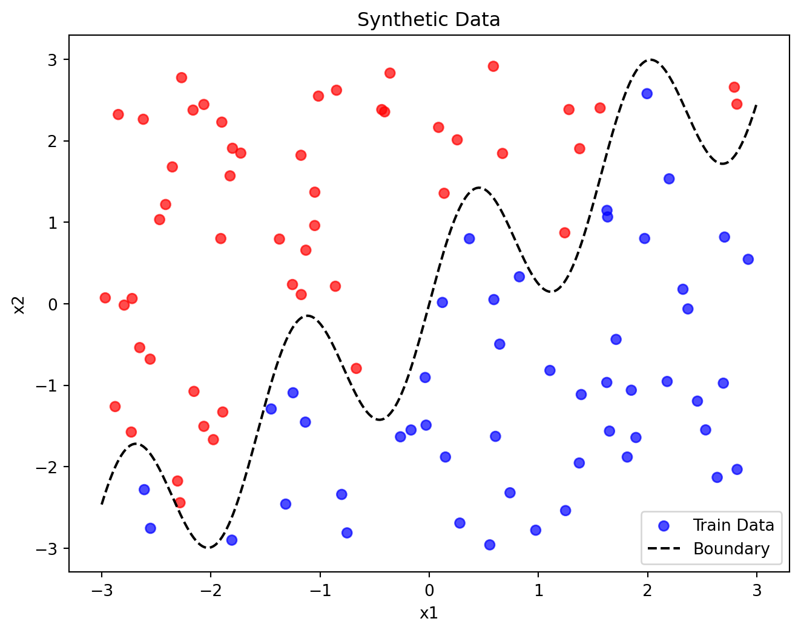
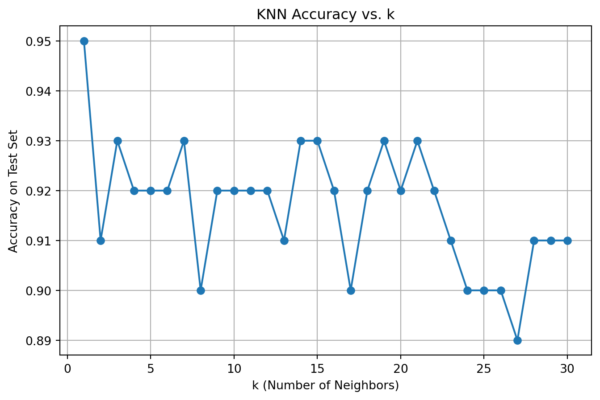

import numpy as np
import matplotlib.pyplot as plt
import seaborn as sns
from sklearn.preprocessing import StandardScaler
from sklearn.cluster import KMeans
from sklearn.metrics import silhouette_score
penguins = sns.load_dataset("penguins")
X = penguins[['bill_length_mm', 'flipper_length_mm']].dropna().values
X_scaled = StandardScaler().fit_transform(X)
k = 3
np.random.seed(42)
indices = np.random.choice(X_scaled.shape[0], k, replace=False)
centroids = X_scaled[indices]
for iteration in range(100):
distances = np.sqrt(((X_scaled - centroids[:, np.newaxis])**2).sum(axis=2))
labels = np.argmin(distances, axis=0)
new_centroids = np.array([X_scaled[labels == i].mean(axis=0) for i in range(k)])
if np.allclose(centroids, new_centroids):
break
centroids = new_centroids
def plot_kmeans(X, labels, centroids, title):
plt.figure(figsize=(8, 6))
plt.scatter(X[:, 0], X[:, 1], c=labels)
plt.scatter(centroids[:, 0], centroids[:, 1], marker='x', s=200, color='red', label='Centroids')
plt.title(title)
plt.xlabel('Bill Length')
plt.ylabel('Flipper Length')
plt.legend()
plt.show()
plot_kmeans(X_scaled, labels, centroids, "Custom K-means (k=3)")Machine Learning Analysis: K-Means and KNN
Introduction
This analysis explores two machine learning approaches using Python: an unsupervised learning method (K-means clustering) and a supervised learning method (KNN Analysis). The goal is to understand and implement these methods while analyzing their effectiveness on real-world datasets.
Part 1: K-Means Clustering Analysis
In this section, we implement our own version of the K-means clustering algorithm using Python. The process begins with the initialization of cluster centroids, followed by the assignment of data points to their nearest centroids. We then recalculate the centroids based on these assignments and repeat this process iteratively until the algorithm converges. For our analysis, we use the Palmer Penguins dataset, focusing specifically on two key features: bill length and flipper length.
Implementation
Comparison with Built-in Implementation
As we can see the results are the same confirming the correctess of the by hand approach.
sk_kmeans = KMeans(n_clusters=3, random_state=42).fit(X_scaled)
plot_kmeans(X_scaled, sk_kmeans.labels_, sk_kmeans.cluster_centers_, "sklearn KMeans (k=3)")
Cluster Evaluation
Within-Cluster Sum of Squares and Silhouette
Beneath the plots for the elbow method and silhouette analysis can be found. We can see the trend that the higher the number of clusters the lower the appropriate scores.
wcss = []
silhouette_scores = []
K_range = range(2, 8)
for k in K_range:
np.random.seed(42)
indices = np.random.choice(X_scaled.shape[0], k, replace=False)
centroids = X_scaled[indices]
# Copied from aboive
for iteration in range(100):
distances = np.sqrt(((X_scaled - centroids[:, np.newaxis])**2).sum(axis=2))
labels = np.argmin(distances, axis=0)
new_centroids = np.array([X_scaled[labels == i].mean(axis=0) for i in range(k)])
if np.allclose(centroids, new_centroids):
break
centroids = new_centroids
wcss.append(np.sum([np.sum((X_scaled[labels == i] - X_scaled[labels == i].mean(axis=0))**2) for i in range(k)]))
if len(set(labels)) > 1:
silhouette_scores.append(silhouette_score(X_scaled, labels))
else:
silhouette_scores.append(np.nan)
plt.figure(figsize=(10, 4))
plt.subplot(1, 2, 1)
plt.plot(K_range, wcss, 'bo-')
plt.xlabel('Number of Clusters (k)')
plt.ylabel('WCSS')
plt.title('Elbow Method')
plt.subplot(1, 2, 2)
plt.plot(K_range, silhouette_scores, 'go-')
plt.xlabel('Number of Clusters (k)')
plt.ylabel('Silhouette Score')
plt.title('Silhouette Analysis')
plt.tight_layout()
plt.show()
Part 2: K Nearest Neighbors Classification
In this section, we implement and analyze the K-Nearest Neighbors algorithm. We generate a synthetic dataset with a non-linear decision boundary and compare our hand-coded KNN implementation to scikit-learn’s built-in version. We also explore how the choice of the number of neighbors affects classification accuracy. The dataset consists of two features, x1 and x2, each uniformly distributed between -3 and 3. The binary outcome variable y is determined by whether x2 is above or below a defined boundary.
Data Generation
We first generate the training data and visualize it, coloring points by their class and overlaying the true boundary.
from sklearn.neighbors import KNeighborsClassifier
np.random.seed(42)
n = 100
x1 = np.random.uniform(-3, 3, n)
x2 = np.random.uniform(-3, 3, n)
boundary = np.sin(4 * x1) + x1
y = (x2 > boundary).astype(int)
X_train = np.column_stack((x1, x2))
y_train = y
plt.figure(figsize=(8, 6))
plt.scatter(x1, x2, c=y, cmap='bwr', alpha=0.7, label='Train Data')
x1_line = np.linspace(-3, 3, 300)
plt.plot(x1_line, np.sin(4 * x1_line) + x1_line, 'k--', label='Boundary')
plt.xlabel('x1')
plt.ylabel('x2')
plt.title('Synthetic Data')
plt.legend()
plt.show()
Test Set Generation
We generate a separate test set using a different random seed to evaluate model generalization.
np.random.seed(123)
x1_test = np.random.uniform(-3, 3, n)
x2_test = np.random.uniform(-3, 3, n)
boundary_test = np.sin(4 * x1_test) + x1_test
y_test = (x2_test > boundary_test).astype(int)
X_test = np.column_stack((x1_test, x2_test))Hand-coded KNN
KNN classifies each test point by finding the k closest points in the training set and assigning the majority class among those neighbors. Below is our manual implementation:
k = 5
def knn_predict(X_train, y_train, X_test, k):
y_pred = []
for test_point in X_test:
distances = np.sqrt(np.sum((X_train - test_point) ** 2, axis=1))
nn_indices = np.argsort(distances)[:k]
nn_labels = y_train[nn_indices]
counts = np.bincount(nn_labels)
y_pred.append(np.argmax(counts))
return np.array(y_pred)
y_pred_manual = knn_predict(X_train, y_train, X_test, k)
print(f"Manual KNN accuracy: {(y_pred_manual == y_test).mean():.2f}")Manual KNN accuracy: 0.92Comparison with scikit-learn
We compare our implementation to scikit-learn’s KNeighborsClassifier for k=5:
sk_knn = KNeighborsClassifier(n_neighbors=k)
sk_knn.fit(X_train, y_train)
y_pred_sklearn = sk_knn.predict(X_test)
print(f"sklearn KNN accuracy: {(y_pred_sklearn == y_test).mean():.2f}")sklearn KNN accuracy: 0.92Varying k
We evaluate the classification accuracy for k=1 to k=30 and plot the results to determine the optimal value of k.
accuracies = []
for k in range(1, 31):
y_pred = knn_predict(X_train, y_train, X_test, k)
acc = (y_pred == y_test).mean()
accuracies.append(acc)
plt.figure(figsize=(8, 5))
plt.plot(range(1, 31), accuracies, marker='o')
plt.xlabel('k (Number of Neighbors)')
plt.ylabel('Accuracy on Test Set')
plt.title('KNN Accuracy vs. k')
plt.grid(True)
plt.show()
Although k=1 yields the highest test accuracy in the plot, it should not be chosen solely on that basis. A better practice is to choose the smallest k that gives accuracy close to the maximum but shows low variance, like 5.